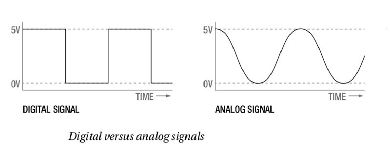

Before jumping into the Arduino Completely, we present the foundations of electricity and electronics and introduce key concepts used.Here provides a broad overview of electronics to readers who have little to no experience with electronics and electricity. If you’re already comfortable with some of the topics in this chapter, you can skip these and go to programming page.
If you’re new to electronics or just want a refresher, we suggest reading this webapge in full. While it’s not a complete guide to electronics (there are whole books, classes, and degrees on the subject), this chapter is a handy reference designed to arm you with basic concepts and vocabulary.
To understand electricity, you first need to understand the structure of an atom. Atoms are the building blocks of everything around you. An atom is made up of protons, neutrons, and electrons. The electrons have a negative charge, and the protons have a positive charge. A typical atom has the same number of electrons as protons and therefore is neutral in charge. Electricity is a form of energy that involves the movement or storage of charges; it is the phenomenon that occurs when we push or force charges to move in a prescribed manner or a defined path.
In simple terms, electricity is aform of energy that we can harness and convert into heat, light, movement, and power. Electricity has three main properties that will be important to us as we build projects: current, voltage, and power.
Current
The flow of electrical energy through a circuit is called the current. Electrical current flows through a circuit from the positive side of a power source, such as a battery, to the negative side of the power source. This is known as direct current (DC).In some circuits, the negative side is called ground (GND). Current is measured in amperes or “amps” (A). Small amounts of current are measured in milliamps (mA), where 1,000 milliamps equal 1 amp.
Voltage
Voltage is a measure of the difference in potential energy between a circuit’s positive and negative ends. This is measured in volts (V). The greater the voltage, the faster the current moves through a circuit.
Power
Power is a measurement of the rate at which an electrical device converts energy from one form to another. Power is measured in watts (W). For example, a 100 W light bulb is much brighter than a 60 W bulb because the higher-wattage bulb converts more electrical energy into light. A simple mathematical relationship exists among voltage, current, and power:
Power (W) = Voltage (V) × Current (A)
Even with the electrical forces pushing them, charges need a path to follow from a point of higher potential to a point of lower potential. The path by which charges move from the positive (+) side of a battery (high potential) to the negative (–) side of the battery (low potential) is called a circuit. A circuit consists of a closed path from the positive terminal to the negative terminal through a device such as a light-emitting diode (LED), resistor, light, or motor.
In order for charges to move, the path must be made out of a material that is conductive. Conductivity is not an absolute measure but more of a continuum. In other words, some materials allow charges to move more freely than others.
As you may already have guessed, there is a relationship between current, voltage, and resistance. This relationship is commonly called Ohm’s Law, and it is represented mathematically as follows:
V = I × R
In this equation, V represents the voltage, I represents the current, and R is the resistance.
Schematics are simplified drawings of circuits. We sometimes also call these wiring diagrams or circuit blueprints. A schematic shows what is connected to what and which components to use in building the circuit.
With the concepts of circuits, components, voltage, current, and resistance defined, we can now talk about two different approaches to electronics: analog and digital. These approaches are not mutually exclusive, and you can’t really understand the circuits you build without understanding bothconcepts.
Analog deals with values that vary within a set range. Think of the dimmer switch in some dining rooms; that is analog. Analog values can be on, off, and anything in between. Digital values, on the other hand, have only two.states: on or off.
Digital electronics tend to include a microcontroller or microprocessor that isprogrammed to turn things on and off in response to conditions, whereasanalog circuits tend to use components to vary the current, voltage, andresistance of a circuit to achieve the same result.There are advantages and disadvantages to both ways of thinking, but youcan’t solely use one and not the other. For example, you couldn’t read thetemperature using a microcontroller without using a number of analog components as well.
A microcontroller is a small computer that you can program by uploading a program or set of instructions. Microcontrollers are used to automate simple tasks, like controlling the temperature of your house or watering your lawn when it’s dry.